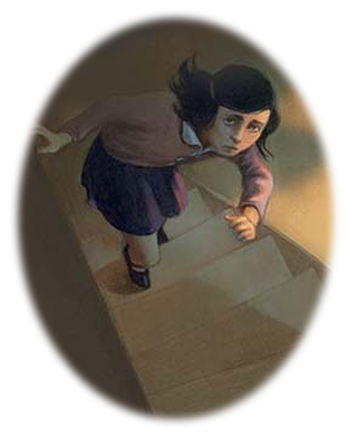

In Hiding
In the middle of the city there was a large, average looking building. And in this building was the business offices that Otto had just sold to his friend. On the top floor of this business there was a bookcase. And behind this bookcase was a secret passage...
This passage led up some dark stairs into a secret house, hiding silently on top of the offices below. Three stories tall, on the first level were two small rooms, with a bathroom and toilet. On the second level was a large open room with a small room beside it. And from this small room a ladder led up to the attic. It was in this secret house, that Otto, Anne and the rest of the Frank family went into hiding to keep out of sight of the Evil Lords men who had now started patrolling the streets looking for Jewish families.